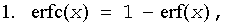
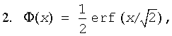
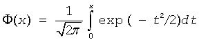
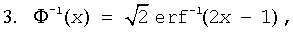
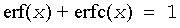

Intel® oneAPI Math Kernel Library Developer Reference - Fortran
Computes the error function value of vector elements.
call vserf( n, a, y )
call vserfi(n, a, inca, y, incy)
call vmserf( n, a, y, mode )
call vmserfi(n, a, inca, y, incy, mode)
call vderf( n, a, y )
call vderfi(n, a, inca, y, incy)
call vmderf( n, a, y, mode )
call vmderfi(n, a, inca, y, incy, mode)
Name |
Type |
Description |
|---|---|---|
n |
INTEGER, INTENT(IN) |
Specifies the number of elements to be calculated. |
a |
DOUBLE PRECISION for vderf, vmderf REAL, INTENT(IN) for vserf, vmserf DOUBLE PRECISION, INTENT(IN) for vderf, vmderf |
Array, specifies the input vector a. |
inca, incy |
INTEGER, INTENT(IN) |
Specifies increments for the elements of a and y. |
mode |
INTEGER(KIND=8), INTENT(IN) |
Overrides global VM mode setting for this function call. See vmlSetMode for possible values and their description. |
Name |
Type |
Description |
|---|---|---|
y |
DOUBLE PRECISION for vderf, vmderf REAL, INTENT(OUT) for vserf, vmserf DOUBLE PRECISION, INTENT(OUT) for vderf, vmderf |
Array, specifies the output vector y. |
The Erf function computes the error function values for elements of the input vector a and writes them to the output vector y.
The error function is defined as given by:
Useful relations:

where erfc is the complementary error function.

where

is the cumulative normal distribution function.

where Φ-1(x) and erf-1(x) are the inverses to Φ(x) and erf(x) respectively.
The following figure illustrates the relationships among Erf family functions (Erf, Erfc, CdfNorm).
Useful relations for these functions:

| Argument | Result | Exception |
|---|---|---|
| +∞ | +1 | |
| -∞ | -1 | |
| QNAN | QNAN | |
| SNAN | QNAN | INVALID |